Club Projects
Service projects by the clubs of District 3141, across Rotary’s avenues of service.
- 18Projects
- 59,895Beneficiaries
- ₹119.7 LAmount spent
- 5,735Man hours
18 projects
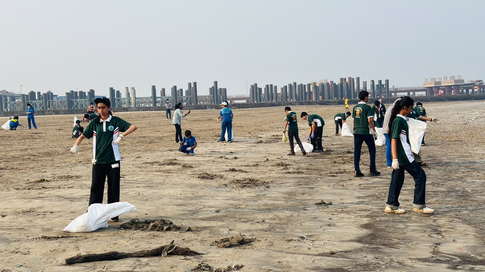
Community Service25 Oct 2026 · RC Bombay Airport
Beach clean-up at Juhu
Volunteers cleared plastic and waste from two kilometres of shoreline.
- Beneficiaries
- 1,800
- Amount spent
- ₹1.2 L
- Man hours
- 640
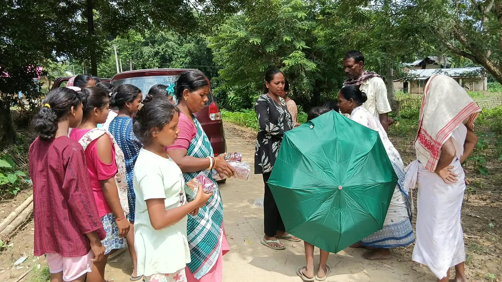
Community Service18 Oct 2026 · RC Bombay Bandra
Dignity packs for girls
Menstrual hygiene kits and a health talk for girls in municipal schools.
- Beneficiaries
- 1,200
- Amount spent
- ₹3.6 L
- Man hours
- 220
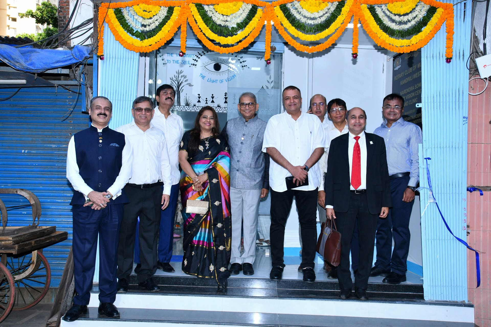
Community Service11 Oct 2026 · RC Upper Kandivali
Vision centre opening
A permanent eye clinic with screening for the neighbourhood.
- Beneficiaries
- 5,200
- Amount spent
- ₹18.5 L
- Man hours
- 410
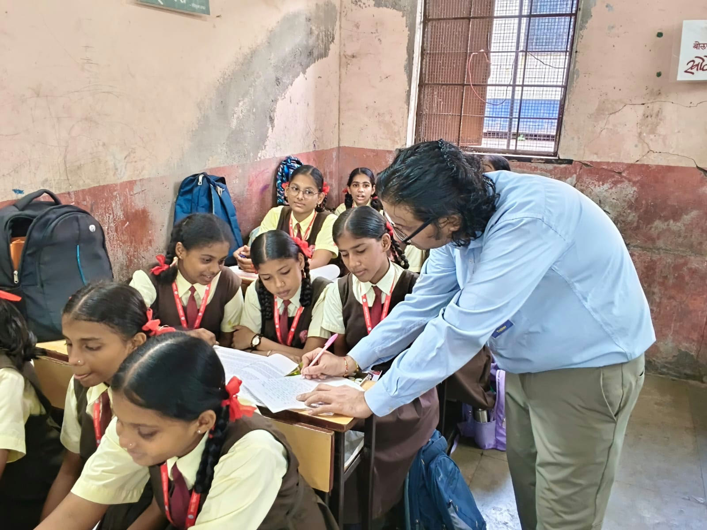
Vocational Service4 Oct 2026 · RC Bombay
English speaking course
A twelve-week spoken English course for schoolgirls.
- Beneficiaries
- 160
- Amount spent
- ₹2.4 L
- Man hours
- 380
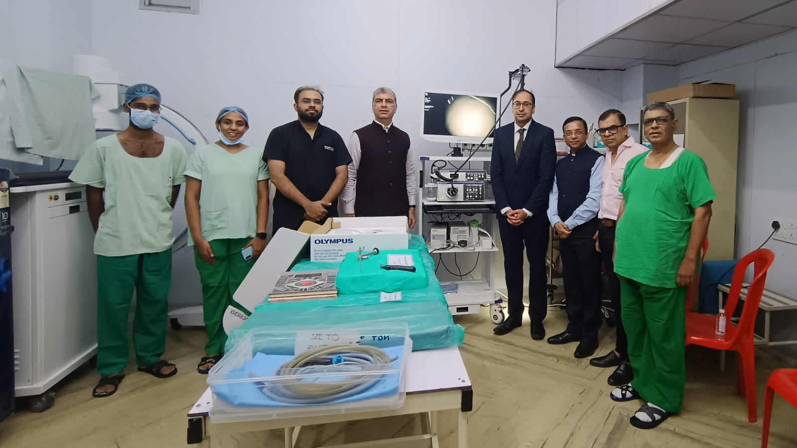
International Service27 Sep 2026 · RC Bombay Pier
Medical equipment for the civic hospital
Dialysis and monitoring equipment funded through a global grant.
- Beneficiaries
- 9,000
- Amount spent
- ₹42.0 L
- Man hours
- 120
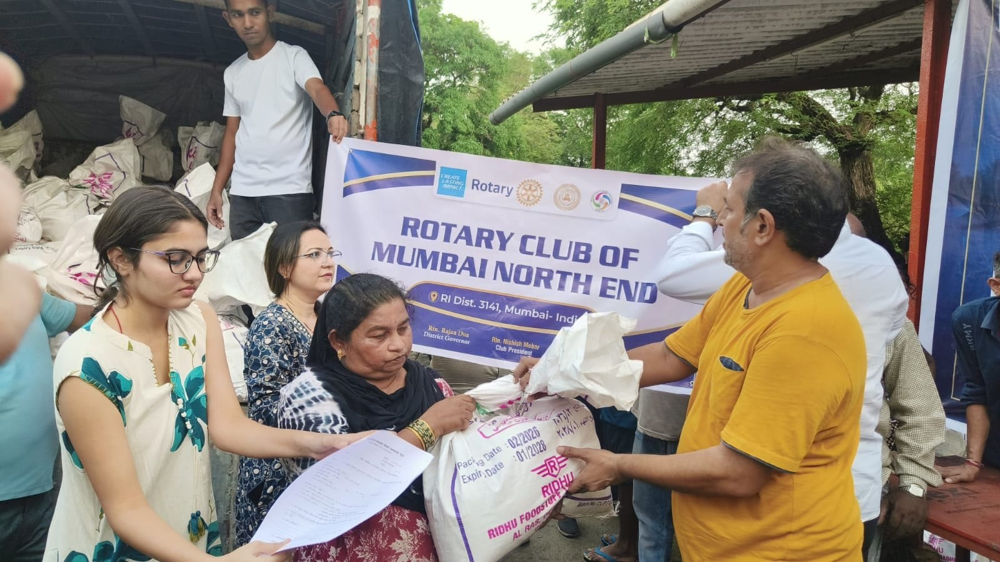
Community Service20 Sep 2026 · RC Vasai
Food kits for families
Monthly ration kits for families of daily-wage workers.
- Beneficiaries
- 650
- Amount spent
- ₹4.1 L
- Man hours
- 300
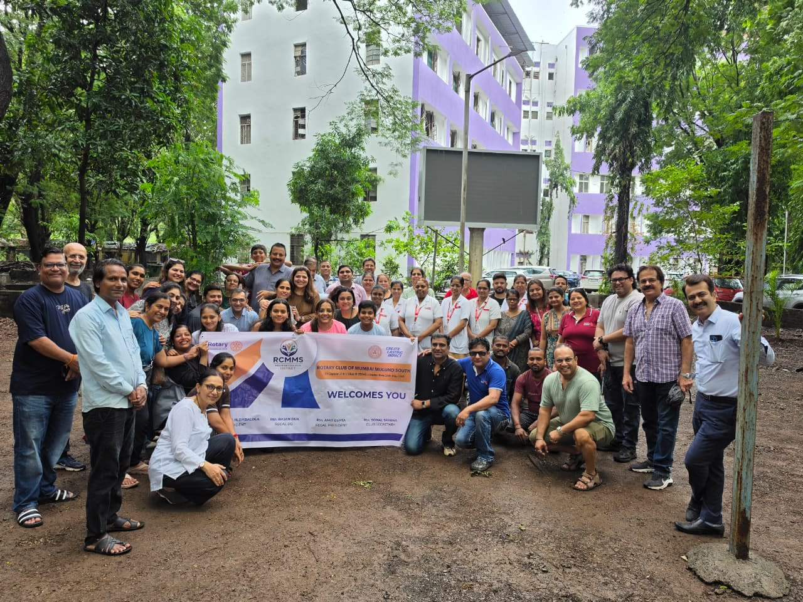
Community Service13 Sep 2026 · RC SkyCity Borivali
Tree plantation drive
Two thousand saplings planted with residents and students.
- Beneficiaries
- 3,000
- Amount spent
- ₹1.8 L
- Man hours
- 520
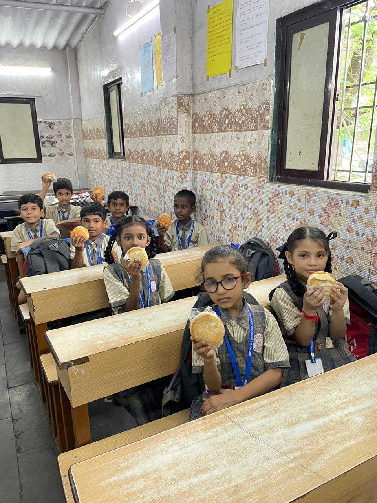
New Generation Service6 Sep 2026 · RC Wada
Mid-day meals for schools
Nutritious meals for children in four village schools.
- Beneficiaries
- 900
- Amount spent
- ₹5.5 L
- Man hours
- 260
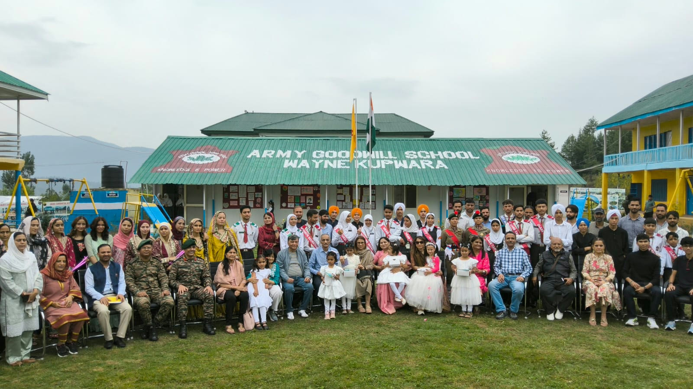
New Generation Service30 Aug 2026 · RC Boisar-Tarapur
Goodwill school opening
A new school building with classrooms, toilets and a library.
- Beneficiaries
- 640
- Amount spent
- ₹26.0 L
- Man hours
- 900
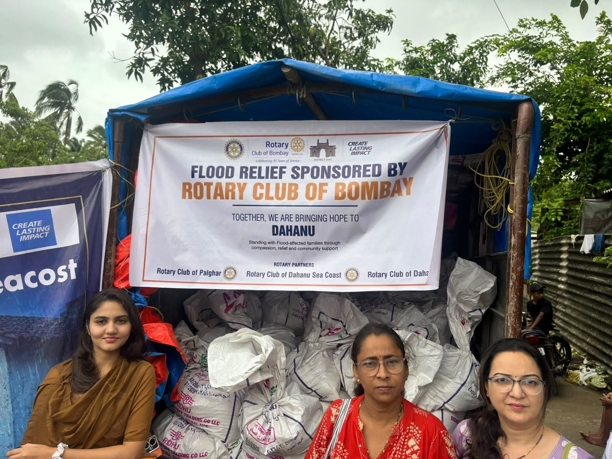
International Service23 Aug 2026 · RC Virar
Flood relief for Dahanu
Supplies and temporary shelter for families after the floods.
- Beneficiaries
- 2,400
- Amount spent
- ₹7.8 L
- Man hours
- 700
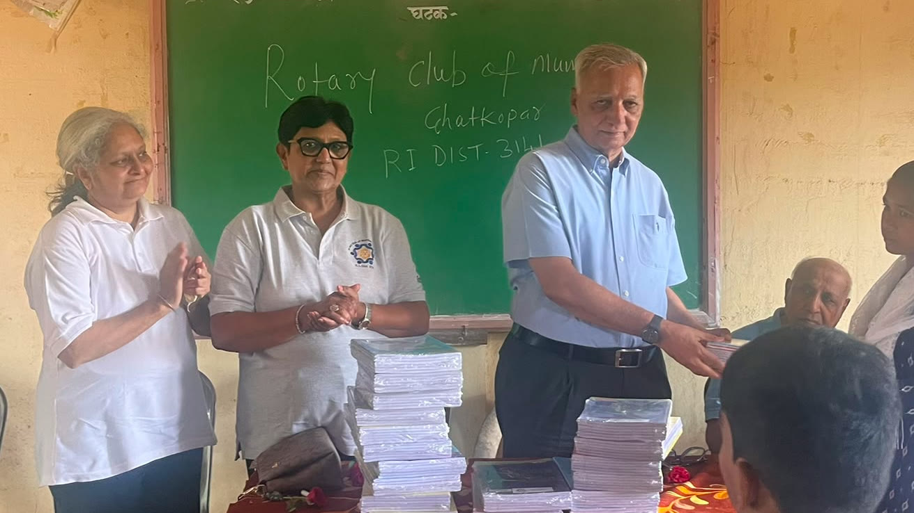
New Generation Service16 Aug 2026 · RC Umroli
Notebooks for students
Notebooks and school kits for the new academic year.
- Beneficiaries
- 1,500
- Amount spent
- ₹1.1 L
- Man hours
- 140
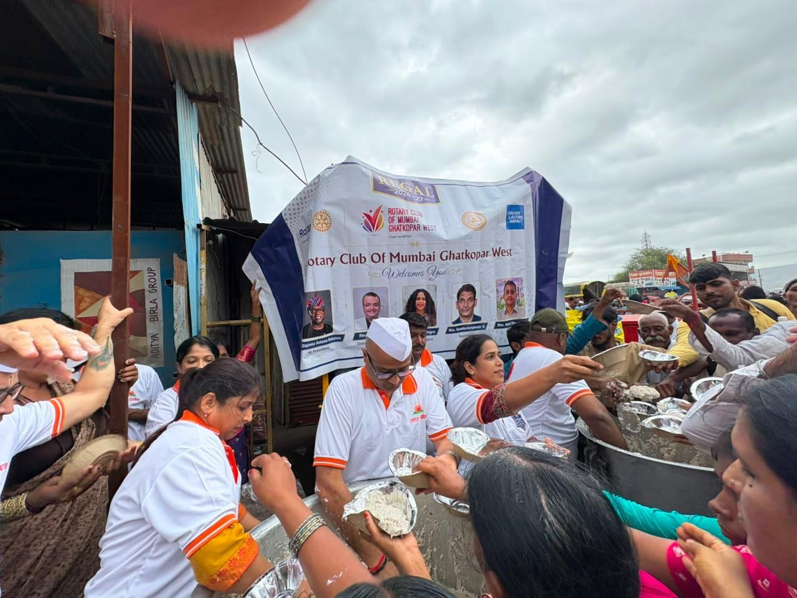
Community Service9 Aug 2026 · RC Bombay
Food for Warkari pilgrims
Meals and water for pilgrims on the way to Pandharpur.
- Beneficiaries
- 8,000
- Amount spent
- ₹2.9 L
- Man hours
- 480
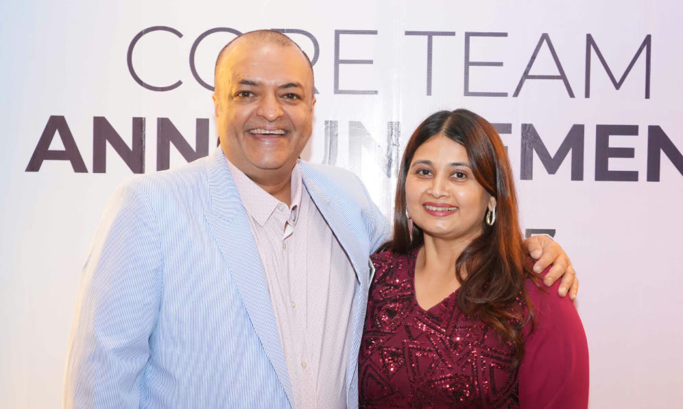
Club Service2 Aug 2026 · RC Bombay Bandra
New member orientation
A half-day welcome and training for members who joined this year.
- Beneficiaries
- 85
- Amount spent
- ₹0.4 L
- Man hours
- 160
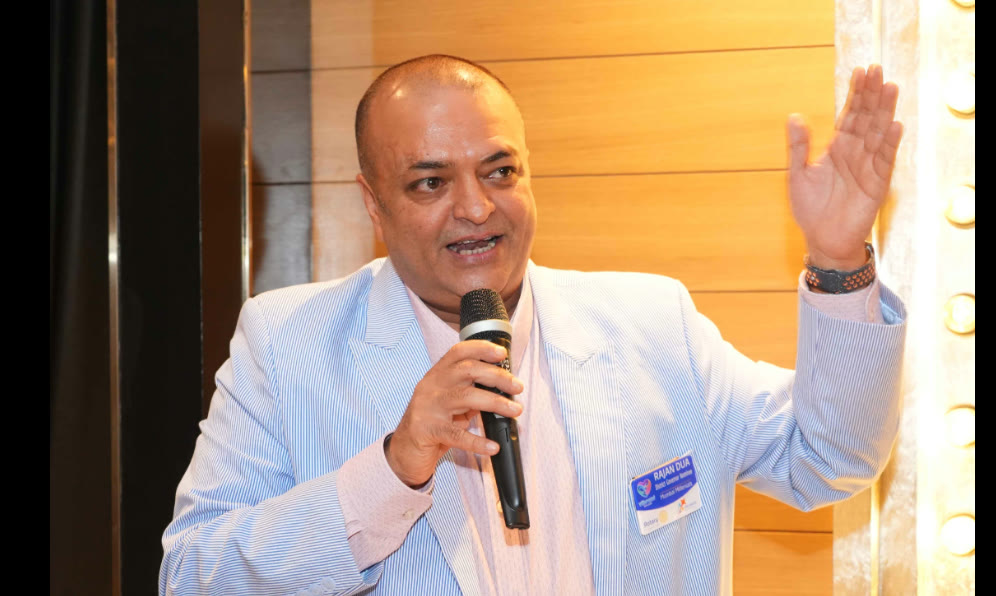
Club Service26 Jul 2026 · RC Bombay Airport
Club leadership training
Training for club presidents, secretaries and directors.
- Beneficiaries
- 140
- Amount spent
- ₹0.6 L
- Man hours
- 210
Club Service 19 Jul 2026 · RC Vasai
Fellowship evening
An evening of fellowship with families of members.
- Beneficiaries
- 120
- Amount spent
- ₹0.3 L
- Man hours
- 90
Club Service 12 Jul 2026 · RC Virar
Membership drive
Open house to introduce Rotary to professionals in the area.
- Beneficiaries
- 60
- Amount spent
- ₹0.2 L
- Man hours
- 75
Vocational Service 5 Jul 2026 · RC Bombay Pier
Vocational excellence awards
Awards for nurses, teachers and workers who serve with distinction.
- Beneficiaries
- 40
- Amount spent
- ₹0.8 L
- Man hours
- 70
Public Image 1 Jul 2026 · RC SkyCity Borivali
Rotary week on social media
A week of stories about club projects across the district.
- Beneficiaries
- 25,000
- Amount spent
- ₹0.5 L
- Man hours
- 60
No project matches your search.